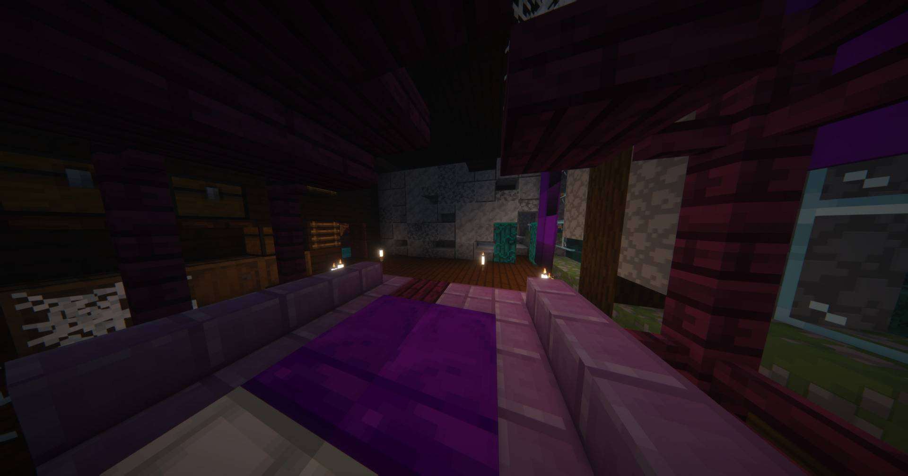
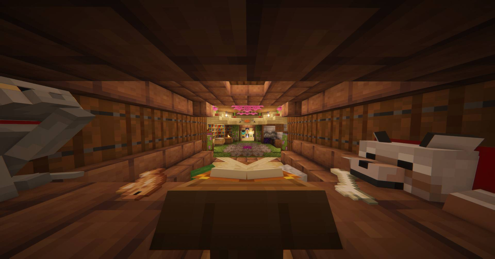
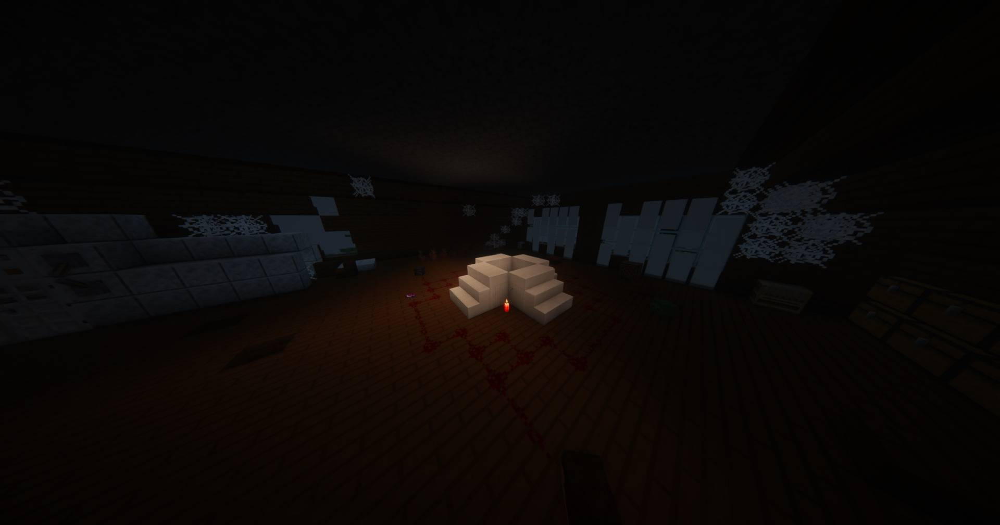
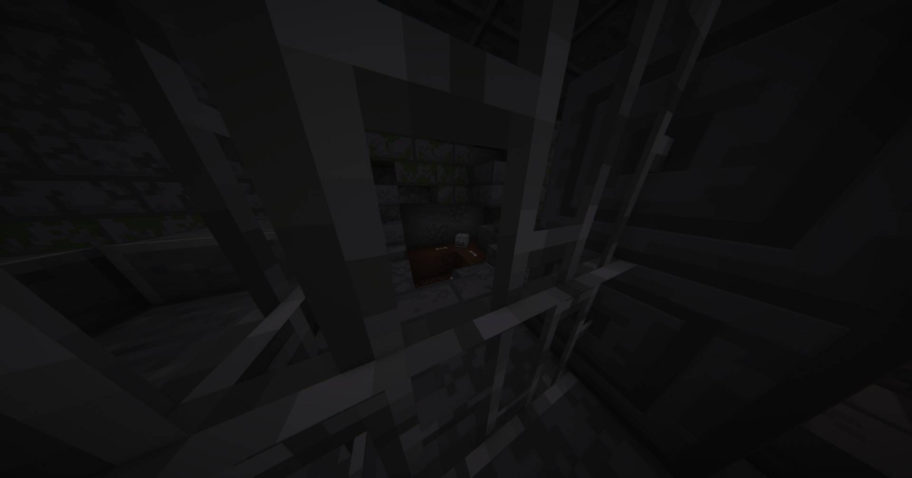
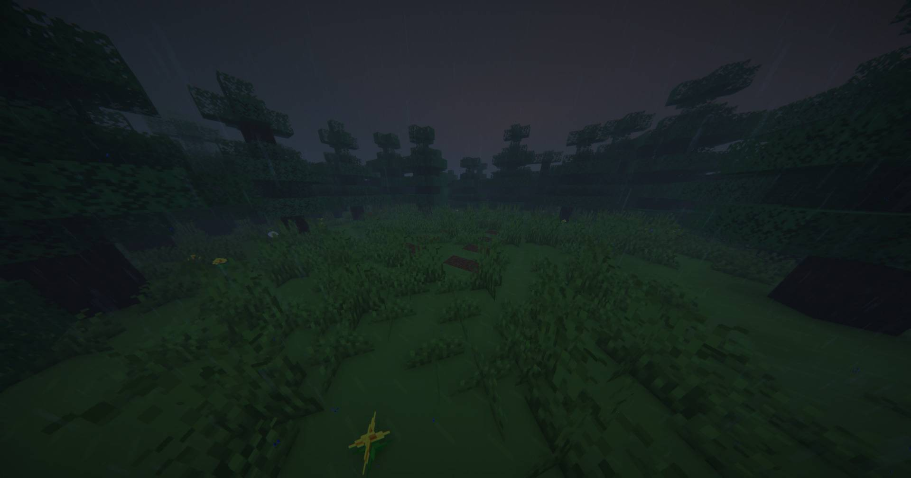
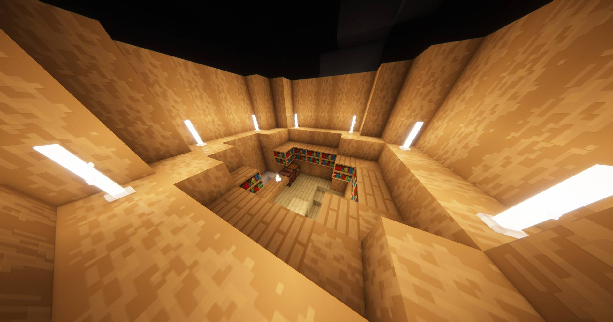
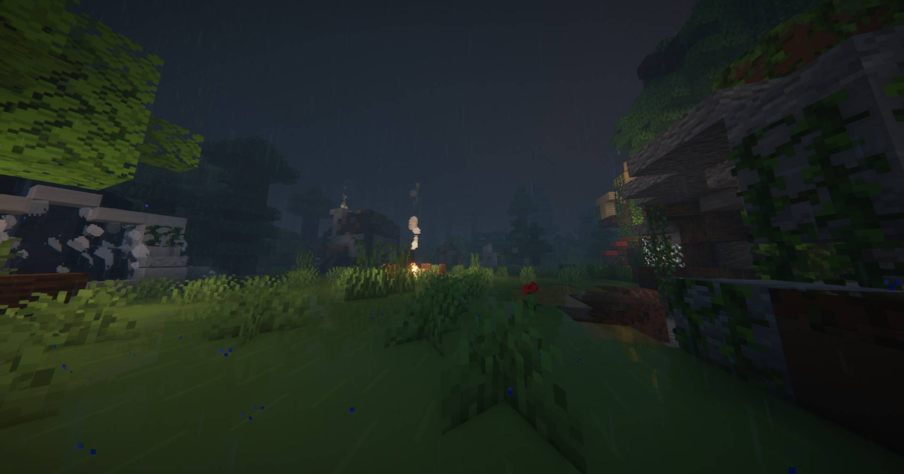
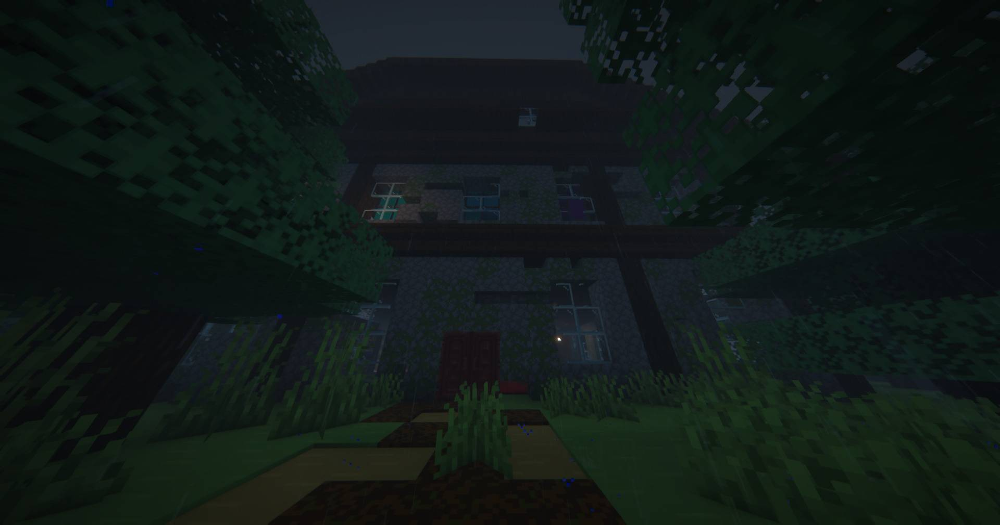

Murder Map
Мистическое расследование в атмосфере страха и тайн
Ты отправляешься в заброшенный город. Совершено убийство — найти преступника как детектив или остаться незамеченным. Собирай улики, общайся с NPC и раскрывай правду.
Несколько концовок, система времени с таймером, динамичный сюжет. Каждое прохождение уникально благодаря вариантам развития событий.
Что тебя ждёт
Ты отправляешься в заброшенный город, окутанный мраком и тайнами. Совершено убийство, и ты либо детектив, ищущий преступника, либо один из подозреваемых. Собирай улики, общайся с NPC, разгадывай головоломки и раскрывай тайны старого города.
Каждое решение влияет на ход событий. Таймер добавляет адреналина — полиция приедет вовремя, и преступника должны задержать. Несколько концовок и режимов игры гарантируют, что каждое прохождение будет уникальным.
Скачивание
Установи карту через лаунчер или скачай напрямую. Оба способа просты и быстры.
Последние обновления
Второй акт
Добавлены новые локации, дополнительные улики и три возможных финала. Игра стала ещё более интерактивной и непредсказуемой.
Оптимизация
Ускорен запуск, улучшена производительность мира и исправлены баги в диалогах NPC. Карта стала ещё стабильнее.